Abrir bien
Concepto, carta, layout, equipamiento, equipo base y puesta en marcha sin improvisar.
Ordenamos restaurantes, hoteles y marcas alimentarias desde donde se juega el negocio: cocina, costos, equipos, layout, servicio y canales digitales.
Servicios
La asesoria se adapta al momento del proyecto: apertura, ordenamiento, rescate o crecimiento.
Concepto, carta, layout, equipamiento, equipo base y puesta en marcha sin improvisar.
Procesos, turnos, compras, produccion, despacho y servicio para que el negocio respire.
Ingenieria de menu, fichas tecnicas, mermas, precio, mix de venta y control diario.
Layout, flujos, mise en place y ergonomia para producir mas con menos friccion.
Estandares, manuales, capacitacion y control para replicar calidad sin depender de memoria.
Delivery, e-commerce, packaging, temperatura, pagos y experiencia fuera del salon.
Metodo Oreka
Marcas propias
Bocus, Cadaques y Parigo son nuestro laboratorio vivo. Lo que proponemos a terceros tambien lo probamos en operacion, con clientes, equipo, costos, venta diaria y presion real.

Delivery premium online, estandarizado desde el inicio y diseñado con margen, produccion y experiencia digital en la misma mesa.
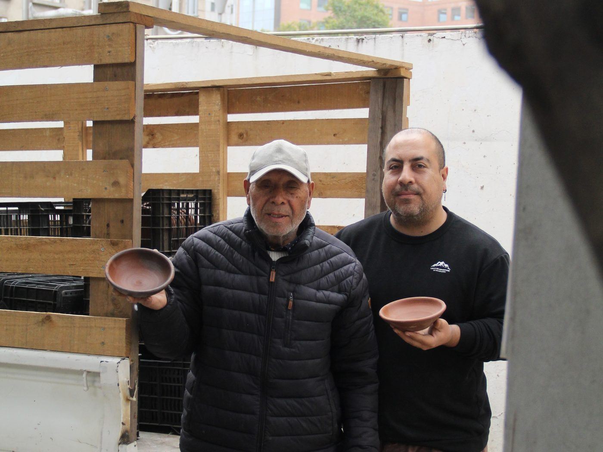

Panaderia de barrio con pan europeo, fermentacion lenta, horno visible y evolucion hacia e-commerce y canales de delivery.
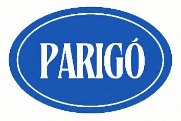
Restaurante propio donde la experiencia, el servicio y la operacion diaria consolidan el metodo Oreka en sala, cocina y gestion.
Experiencia
Procesos, cocina, identidad, carta y desarrollo conceptual para llevar una marca tradicional a una nueva etapa.
Diseño tecnico para una operacion de alta rotacion, mesa y delivery funcionando al mismo tiempo.
Asesoria de producto y carta junto al Chef Patricio Rosas, conectando cocina, vino y experiencia.
Integracion de panaderia y procesos modernos en una institucion gastronomica historica.
Ordenamiento de gestion de personas y estructura operativa para un formato tradicional de alto volumen.
Modelo digital con packaging, temperatura, produccion y experiencia diseñados desde el inicio.
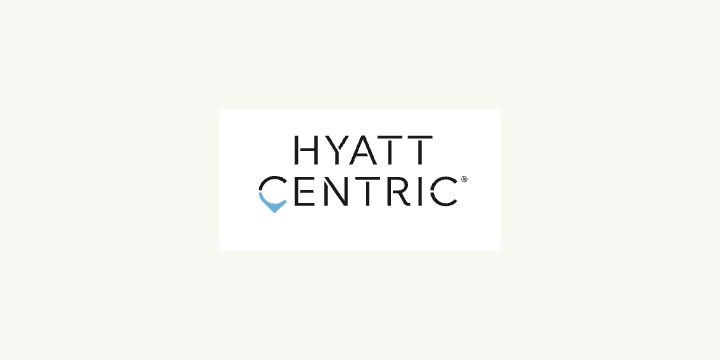
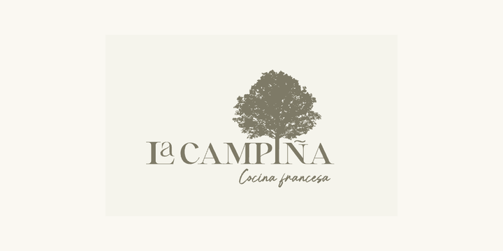
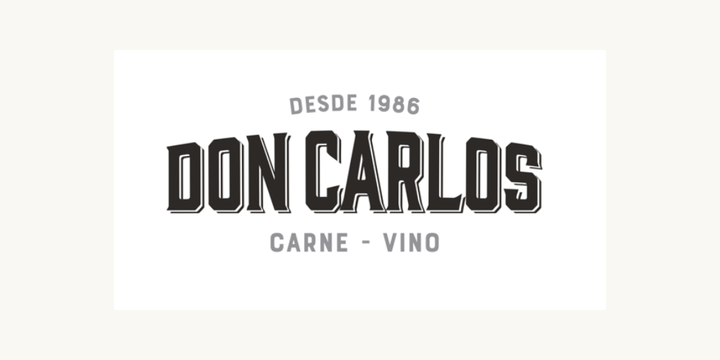
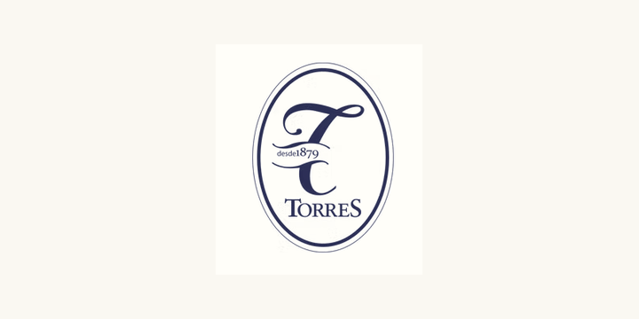
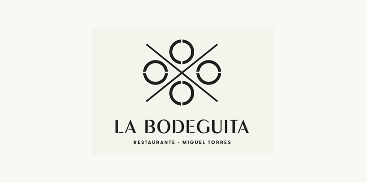
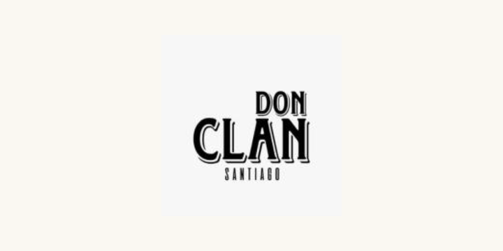
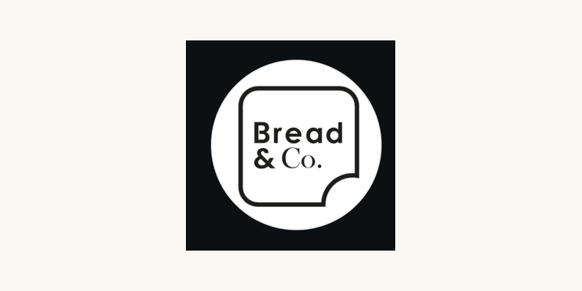
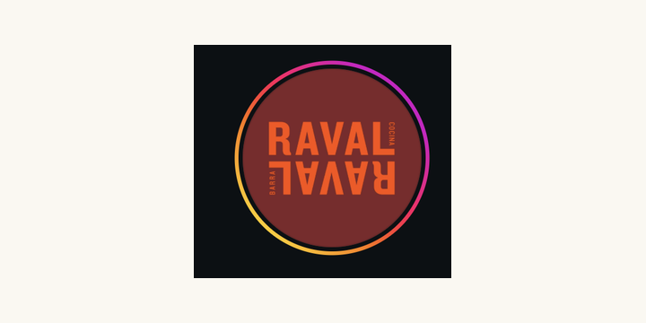
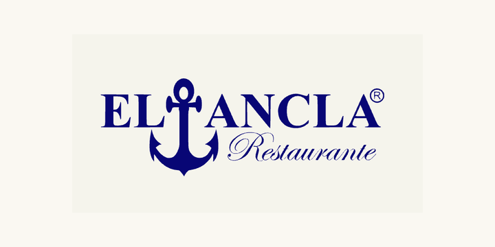
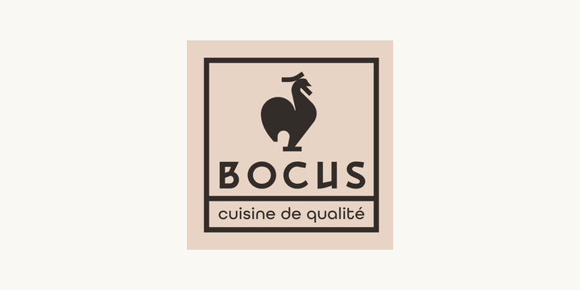
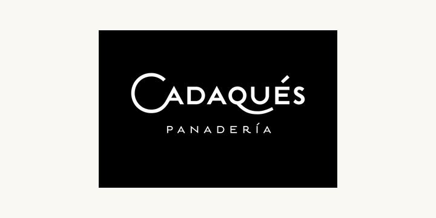
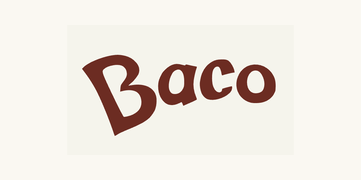
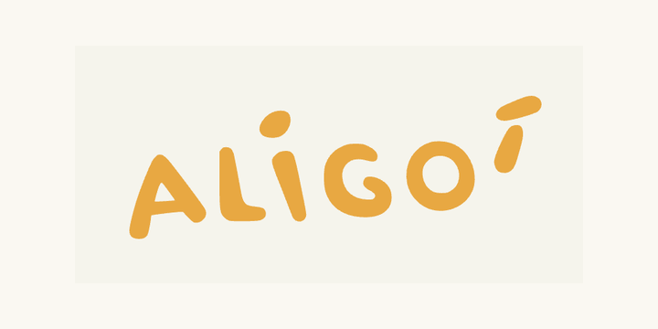
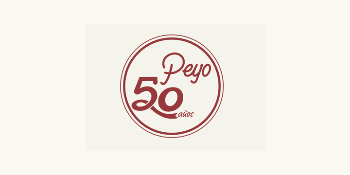
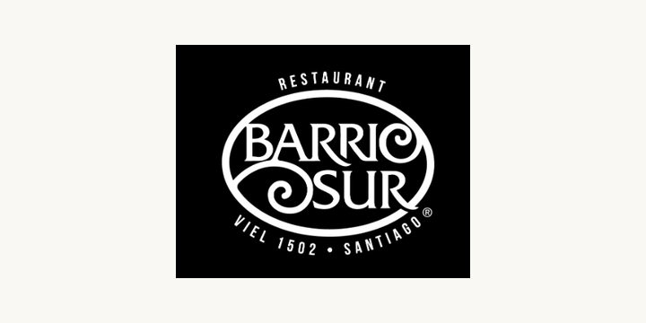
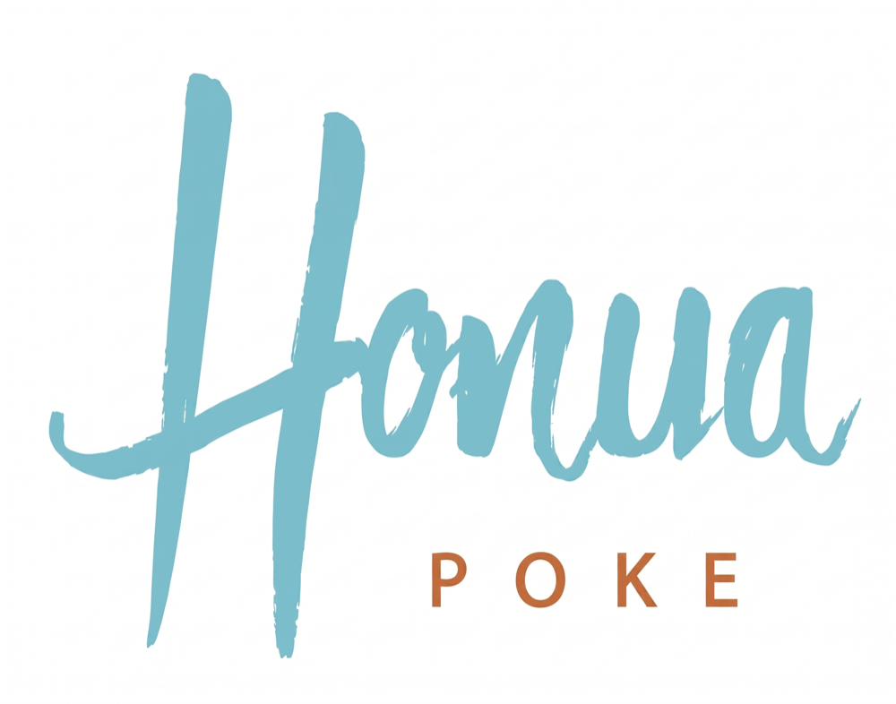
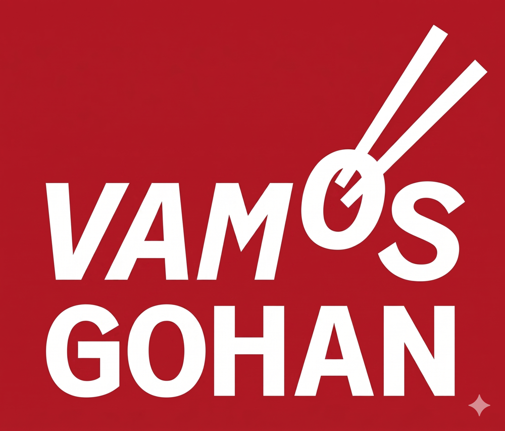
Equipo
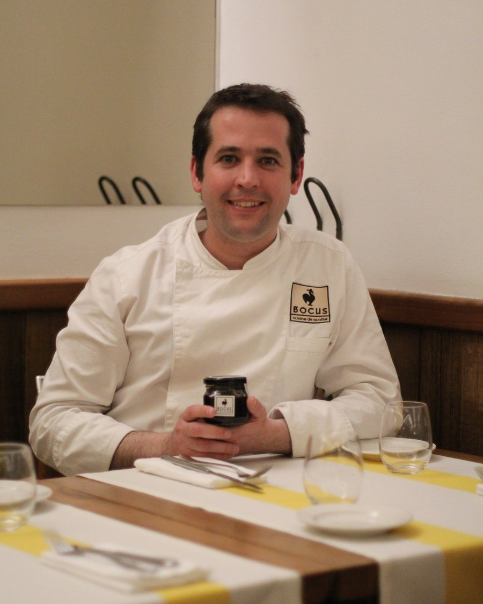
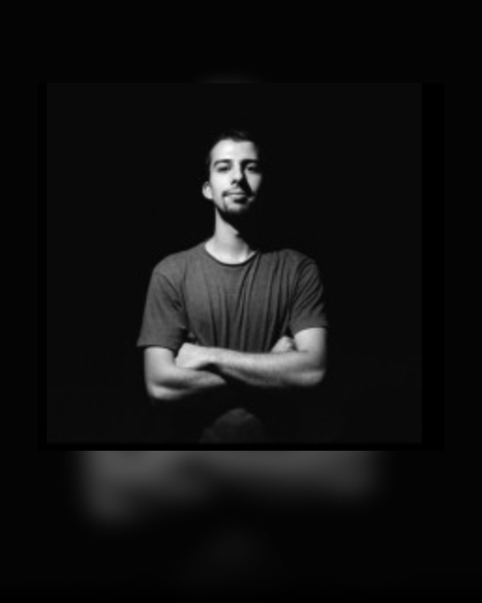
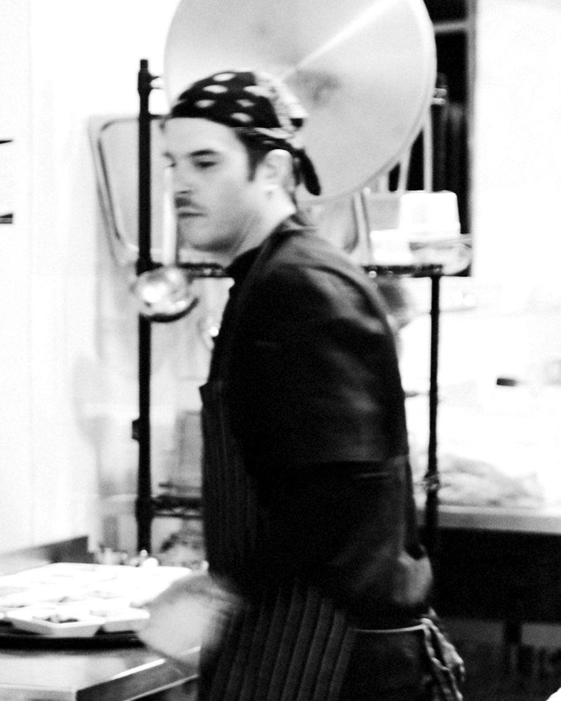
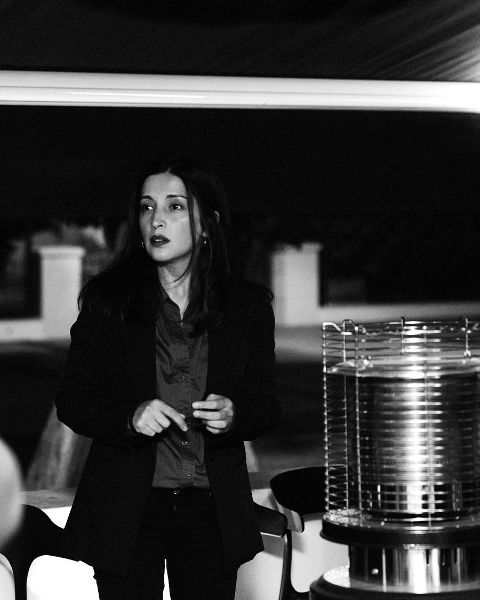
Academia del Queso
Un espacio editorial para transformar material de cursos en fichas, guias y contenido util sobre origen, maduracion, cata y maridaje.
Comte AOP, terroir del Jura, Fort Saint-Antoine y affinage lento.
Frescos, corteza florecida, corteza lavada, prensados y persillados.
Origen, corteza blanca, textura cremosa, cata y maridaje.
Contacto